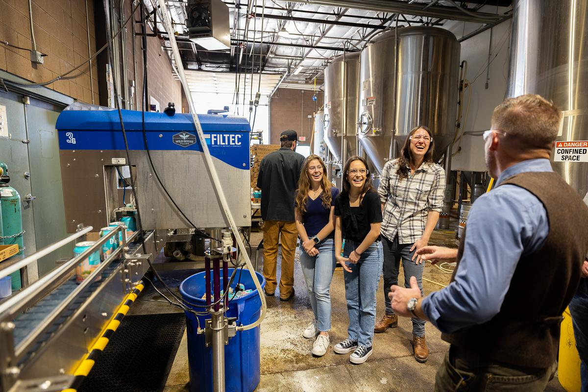
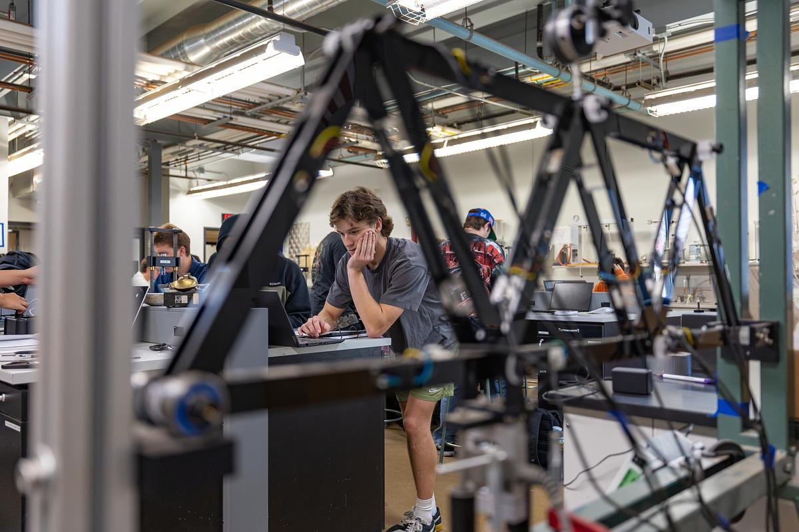

PTAP
Apprenticeship
The Process Technician Apprenticeship Program — a 2-year state-registered apprenticeship with TSMC Arizona, delivered by Northern Arizona University in partnership with Rio Salado College.


Building Arizona's Semiconductor Workforce
The PTAP is designed to strengthen Arizona's semiconductor talent pipeline. Supported by Taiwanese Semiconductor Manufacturing Company (TSMC Arizona) and the City of Phoenix, the educational component is delivered by Northern Arizona University in partnership with Rio Salado Community College.
Developed to address the critical demand for process technicians in the rapidly-expanding microelectronics sector, PTAP combines rigorous academic instruction with hands-on training. Over two years, apprentices complete approximately 600 hours of coursework at NAU's North Valley Campus, paired with 4,000 hours of on-the-job training at TSMC Arizona's North Phoenix site.
NAU is proud to support this official state-registered apprenticeship program. PTAP demonstrates the collective commitment of higher education, industry, and local government to build a sustainable workforce for Arizona's semiconductor economy. The program not only develops skilled technicians aligned with real-time industry needs but also establishes a replicable model of collaboration that strengthens career pathways in semiconductor roles related to metrology, nanotechnology, and advanced manufacturing.

Why PTAP
Classroom instruction meets real-world semiconductor manufacturing at one of the world's leading fabs.
On-the-Job Training at TSMC Arizona
Apprentices gain direct experience with semiconductor equipment and workflows at TSMC Arizona's North Phoenix fab and other industry sites. 4,000 hours of hands-on training over two years.
Academic Instruction
Coursework emphasizes microelectronics fundamentals, safety, and advanced manufacturing processes delivered at NAU's North Valley Campus.
Industry Recognition
Graduates earn TSMC Arizona certifications and a certificate of completion from Rio Salado College, applicable toward an Associate's degree or NAU Bachelor's degree.
Direct Recruitment
Apprenticeship candidates apply for employment directly through TSMC Arizona with a clear path to full-time positions in the semiconductor industry.
Multi-Partner Collaboration
A joint effort between NAU's Sanghi College of Engineering, TSMC Arizona, Rio Salado Community College, the City of Phoenix, and Arizona@Work — demonstrating the collective commitment of higher education, industry, and local government to Arizona's semiconductor economy.
What You'll Learn
The PTAP curriculum covers the full spectrum of semiconductor manufacturing knowledge — from safety fundamentals to advanced process analysis.

How It Works
Three stages from application to a career in the semiconductor industry.
Apply Through TSMC
Candidates apply for employment directly through TSMC Arizona's recruitment process. No prior semiconductor experience required.
Learn & Train
Complete 600 hours of coursework at NAU alongside 4,000 hours of on-the-job training at TSMC's North Phoenix facility over two years.
Launch Your Career
Graduate with TSMC certifications, a Rio Salado certificate, and direct pathways to a full-time role or continued education at NAU.
Start Your Semiconductor Career
Join the next cohort of PTAP apprentices. Build real-world skills with TSMC Arizona while earning academic credentials from NAU and Rio Salado College.